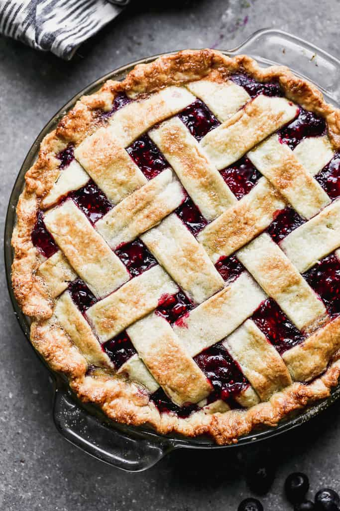

With all of delicious fruits ripe and in season, the perfect thing to bake is a pie or cobbler. Apples, peaches, cherries, and all kinds of berries give you a wide variety to choose from.

Recipe - Miked Berry Pie
Ingredients
Pie Crust
3 cups flour
1/2 tsp. salt
2 tbsp. sugar
1 1/2 cup butter cold
8-10 tbsp. water
1 egg
Filling
2 lbs. mixed berries
1 1/2 cup sugar
2 tbsp lemon about 1/2 of a lemon
4 tbsp. corn starch
3 to 4 cups of powdered sugar
Instructions
Add flour, salt, and sugar to a large bowl.
Cut the butter into small cubes and place into the flour mixture
Break up the butter using your pointer finger and thumb to smear the butter. Continue process until all the butter is broken up and the flour mixture is coarse.
Start to add the chilled water a tablespoon at a time until the dough fully comes together.
Split the dough in half and wrap each half in plastic wrap. Place the dough in the refrigerator for about 30-60 minutes.
Add the fruit to a medium pot over medium heat with the sugar and lemon juice.
Cook the fruit until the juice starts to be reduced and starts to thicken. Only mix when is needed. The more you mix the more liquid will be introduced into your filling! This will take about 10 minutes.
Remove some of the liquid and place in a small bowl. Mix in the cornstarch until all lumps are removed. Place the mixture back into the pot of filling and stir. Take off the heat and let the filling cool.
Turn on the oven to 375F and butter a 9 inch pie tin.
Take one half of the dough and roll out until large enough to fill the bottom of the pie tin.
Place the dough in your pie dish and cut any remainder that is hanging over the sides.
Pour in the cooled filling.
Roll out the other half of the pie dough and decorate your pie however you'd like!
Whip the egg in a small bowl and brush over top of the pie.